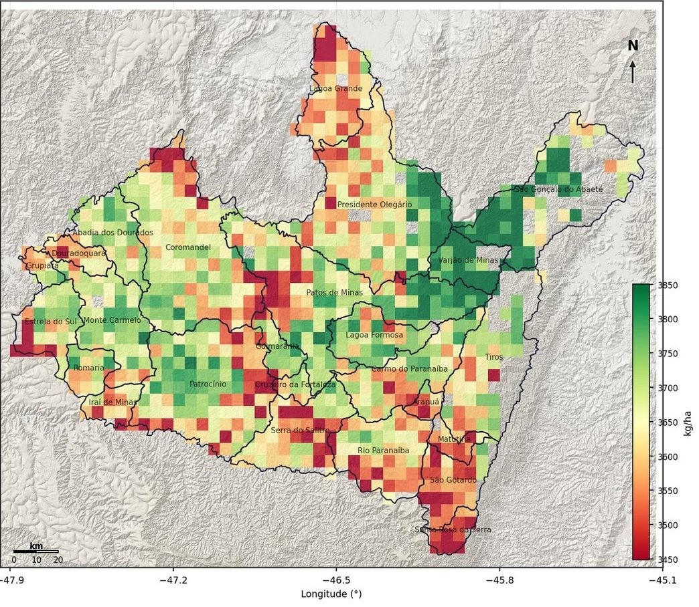

Satellite crop yield forecasting: PIAT and a patent application
A crop, climate and terrain data asset plus an in-house predictive model that estimates yield on cells of roughly 5.5 km instead of one number per municipality.
0.63R² on unseen years: 0.631 for soybean and 0.634 for maize
Context
Available crop forecasts in Brazil work at municipality or state level, so every farmer in the same municipality gets the same number. I built PIAT at GFX GEO for Centelha 3 MG, a startup program run by FAPEMIG (the Minas Gerais state research foundation), with a pilot covering 25 municipalities in the Alto Paranaíba region: soybean, maize and sorghum, 2001 to 2023 harvests.
What I did
- Built the data asset: crop production from IBGE/SIDRA (Brazil's statistics bureau), climate from FLDAS and CHIRPS, MODIS vegetation and temperature, ANADEM terrain and MapBiomas crop fractions.
- Designed a cell grid at CHIRPS resolution with weak supervision: labels are municipal, features are per cell.
- Ran more than 30 experiment versions, each one fully traceable.
- Found and fixed a methodological leak: selecting features outside the fold was inflating sorghum R² by about 0.13.
- Used a placebo test to reject an apparent gain from soil variables.
- Wrote the submission package: scientific document, technical annex, pitch, timeline and 3D maps.
How it works, in four stages
Data
- IBGE/SIDRA
- FLDAS and CHIRPS
- MODIS
- ANADEM and MapBiomas
Processing
- Zonal extraction in Earth Engine
- ~5.5 km cell grid
- Cropland mask
Model
- ExtraTrees
- Unseen-year validation
- Placebo, SHAP and conformal
Product
- Predicted yield maps
- AI agent queried by coordinate (planned)
Method
- Leave-one-year-out temporal validation, with all preprocessing done inside the fold.
- Placebo control: each candidate variable is tested against a shuffled copy of itself, across several seeds.
- ExtraTrees with year as the technology trend; quantile-normal target transform for sorghum.
- Shapley values (SHAP) for interpretation and conformal prediction for intervals.
- Hydro-topographic proxies (TWI, slope) and crop-specific phenological windows.
Result
- R² on unseen years: 0.631 for soybean, 0.634 for maize and 0.490 for sorghum (Alto Paranaíba pilot).
- Satellite-measured cropland fraction came out as the 2nd strongest driver for maize and the 3rd for soybean in SHAP.
- Terrain does affect yield, but below the municipality scale: the municipal average washes it out.
Figures




Patent application BR 10 2025 019783 9
The application was filed on 16 September 2025, with the Federal University of Uberlândia as owner. Its registered title translates as "Method for forecasting agricultural yield through automatic selection of climate variables derived from remote sensing". It is a filed application, not a granted patent, and the technical content only becomes public once INPI publishes it.
- Application filed: BR 10 2025 019783 9, invention patent
- Filed with INPI on 16 September 2025
- Owner: Federal University of Uberlândia